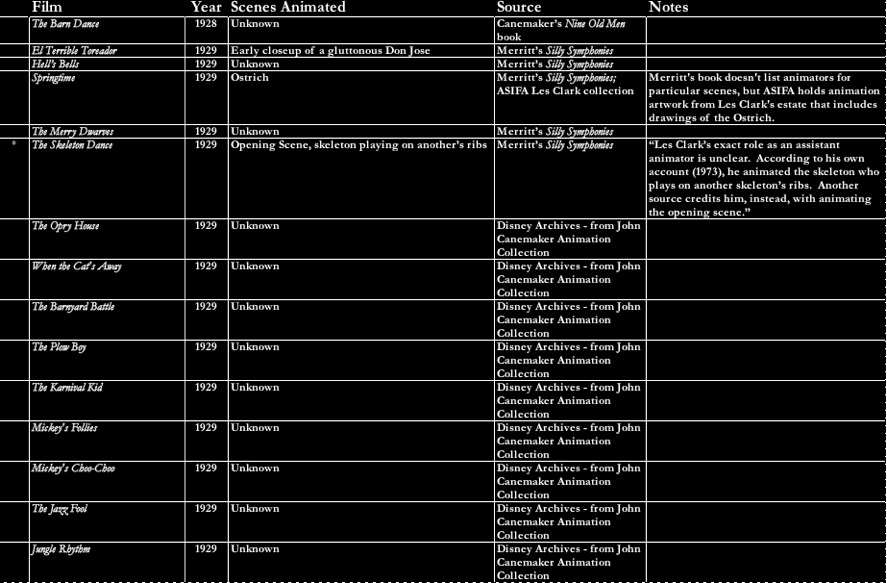
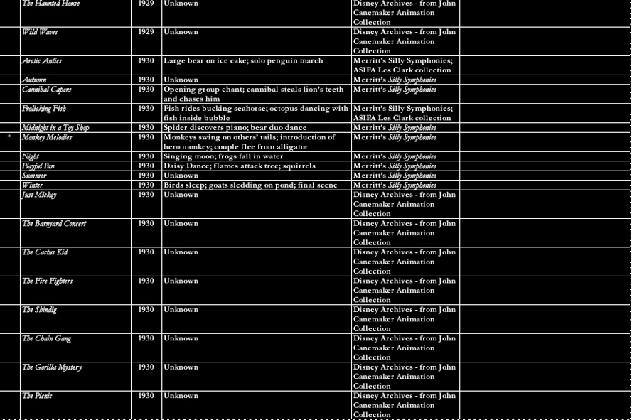
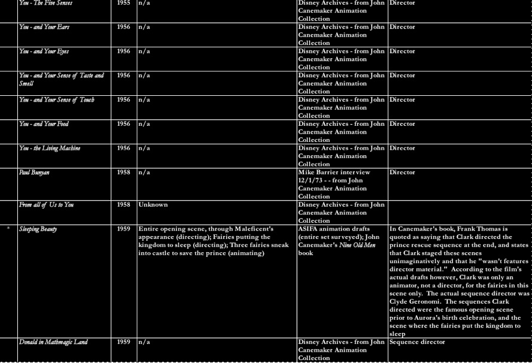
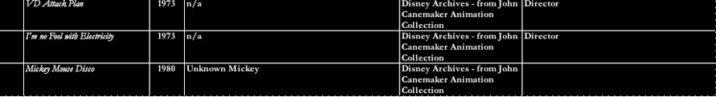

Animography
The following is an excerpt from a transcribed conversation between Les Clark and Frank Thomas in 1978, concerning the training of new animators at Disney:
-
(Frank Thomas) The only other thing I wanted to ask was about the type of thing that you would think would be most helpful to the young guys; the type of drawing, the type of instruction …
-
-
(Les Clark) You [need] something to show them, the process. Because we went through this development of animation up to the time you came [into] this refinement … and so they come to the studio with all this being worked out for them. Are they realizing what has happened or are they as interested in development that has taken place? Or is it like a kid just being born and there is a television set and that’s his whole life?
-
-
(FT) They’re very interested. And their big complaint is that they don’t have the shorts to learn on. They say that you guys have developed this medium up to here and all of a sudden we have got to start keeping up that quality.
-
-
(LC) Well I don’t go along with that really, because they’ve got all the development [here] for them right now, handed to them, and it’s up to them to develop it further.
-
-
(FT) It’s hard for them to understand what they have. All of a sudden they are surrounded by all this stuff that’s called great animation and they are so green that they haven’t been able to absorb all this.
-
-
(LC) Well, look how long it took [us] to make an animator. It took, what, five to seven years, and then [now they’re having to] step up and do quality animation in a year or so? Is that the time schedule now?
After about a year of in-betweening for Ub Iwerks on many classic shorts, including Steamboat Willie, Clark animated his first scene in the film Skeleton Dance in 1929. Since that film, he has animated or directed nearly 200 short and feature-length animated films, as well as informational and educational pieces.
Filmographies for Disney animators are held by the archives, and aren’t readily accessible to the public. I was able to obtain one for this research project, but that still leaves many questions unanswered about the nature of Clark’s work. What types of animation was he assigned, at what did he excel, how did his animation progress?
I’m calling this list an “animography,” because it attempts to fill in some of these gaps to include not only the films Clark worked on, but the scenes he animated in those films. To accomplish this, I consulted many resources, which you can see represented in the Source column. The best sources are called drafts, which are records kept by the studio of what animators were assigned which scenes. Outside of the ones kept under strict watch at the Disney Archives (to which students and members of the public are not allowed access), these drafts are scattered across the archival universe. Some were held at the ASIFA Animation Archive in Burbank, some are posted on the website of animator and historian Hans Perk, and some are held at the John Canemaker Animation Collection at NYU. Other than drafts, I also consulted many other books, articles and resources, most of which can be viewed on the Resources page.
Items that are marked with an asterisk ( * ) are represented in the Clip Reels on this site.

Jun 9, 2007
Placeholder





